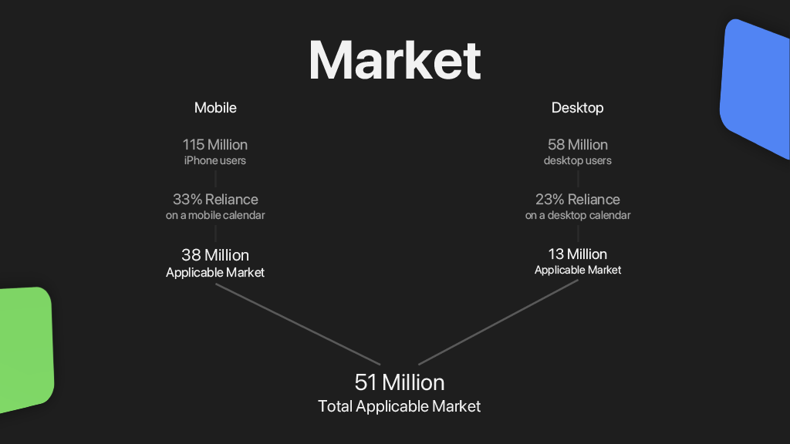

Pitch Deck
August 24, 2021
Welcome to Flowductive's Pitch Deck!
This page contains static presentation slides from the Mu iteration of Flowductive.
You can also download the entire animated PowerPoint presentation below:
Download Pitch Deck - PPTX (32.9 MB)

Slide 1
Hi, my name is Ben Myers and I’m excited to present Flowductive to you.
For users who want to manage their free time effectively, we help them stay driven by providing Flows - a fun,
social, and unique way to commit time to different types of productive activity.
Our app allows you to track and sync your tasks and events, and it challenges you to dedicate productive time
using Flows, while also allowing you to connect and encourage your friends.

Slide 2
Over 100 million people own a personal digital calendar, such as Outlook, Apple Calendar, and Google Calendar.
Slide 3
Yet less than 1 percent actually use them. Why is this?
Slide 4
It’s mainly because:
- Calendar apps are clunky to use,
- They’re only beneficial when a certain critical amount of data is entered,
- Many small tasks and fires in a daily routine make rigid scheduling pointless, and
- Digital task completion is not as rewarding compared to “crossing things off” on paper.
Slide 5
One of the major ways that Flowductive solves these problems is by introducing Flows, a quick and flexible way to manage the times in your day that aren’t associated with a particular event. It looks like my current Flow has 3 cards; let’s see how it works.
Slide 6
My first card is a 30 minute Health. Once I press Start on my iPhone, I’ll commit 30 minutes to improving my personal health. Maybe I’ll go to the gym.
Slide 7
Next, I’ve got a 15 minute Growth card. During this time, I think I’ll go out and take a walk for my personal mental health.
Slide 8
And, for my last card, I’ll commit an hour to getting some work done.
Slide 9
There are thousands of ways you can customize your Flow. Maybe you’ll want to start out with a workout; or perhaps you’ll want to commit much more time to working on your tasks.
Slide 10
Getting a Flow started is designed to be quick and easy.
All you need to do is enter your tasks,
Slide 11
Enter your events,
Slide 12
And Flowductive will recommend Flows for you made by other users that match your schedule!
Slide 13
The whole idea behind Flows is to ensure that they are flexible. Instead of having a pre-made schedule for when to
exercise, or complete your tasks, Flowductive has you play ‘cards’ throughout the day when you’re available.
In this way, we’re hoping that Flows will be a unique solution to help stay motivated throughout the day.
Slide 14
One of the main core features Flowductive has to offer is a rich task-tracking system.
Our goal is to make the completion of tasks as rewarding and satisfying as possible through social and visual
encouragement.
Slide 15
Another great feature we have to offer is third-party syncing. We want to minimize the amount of time you spend
entering your tasks and events, so we try to do that for you.
We’re not trying to replace the calendar market; rather, we are working to be in conjunction with it. The app will
be able to sync with popular third-party calendar applications to shorten the data-entry time, helping you stay
even more focused
on managing your unplanned time.
Slide 16
Flowductive features a one-of-a-kind social system, a feature uncommon in the productivity industry. Users can
follow and friend each other; see their activity (including flows and active tasks, if opted), and can send
encouragement
notifications to one another.
By targeting people who want to improve the way they stay motivated, we know that through a system like this,
users will help us build a strong community of people who encourage one another to stay productive.
Slide 17
Our mission is to redesign the way that you accomplish that. We strive to do this through a few guiding
principles:
Make staying updated as clean, simple, and quick as possible.
Relish in the unpredictability of life and embrace flexibility.
Make task and flow completion rewarding and satisfying.
Slide 18
Todoist, TickTick, and Things are all calendar and task list apps with many great and powerful features. However,
most calendar/task apps don’t have a strong social aspect, and most don’t provide unique ways to motivate users to
do more than
what is just on their task list.
Apps like Fabulous, Motivate, and ThinkUp offer solutions to stay motivated and even block out time, but none of
these follow Flowductive’s unique time-blocking system.
Slide 19
Despite the competition, we pride ourselves on some key advantages.
We are free-to-use. Many other motivational apps start out with paid subscriptions.
Our app is captivating. Our community and gamification of tasks and flows holds an engaged userbase.
And we’re unique. We aim to provide a distinct solution for staying motivated.
Slide 20
Flowductive has an applicable market of over 51 million Americans, and this has a lot of potential for growth.
Slide 21
Introducing a desktop platform will increase the target demographic by 13 million Americans.
Going worldwide could expand that market to over 300 million people within the mobile industry.
Slide 22
We want to be more than just a productivity app. We value building a strong community of people who strive to stay productive. We don’t want to replace the way you stay organized; we want to help improve the way you stay committed to what needs to get done.
Slide 23
Here is an overview of our timeline. We plan to launch in September and begin developing for web and android shortly afterwards.
Slide 24
As for our business model: Once we’ve acquired a sufficient userbase, we plan to generate profit through brand sponsors and a premium plan. In the future, we also plan to open up some additional enterprise solutions.
Slide 25
In terms of acquiring new users, we plan to grow our community through the typical methods of advertising and social sharing options. Our friend/follower system is also projected to increase our engagement and growth.
Slide 26
And finally, to quickly introduce myself, my name is Ben and I have been working hard on Flowductive so we can have a timely release. I’m a UCLA undergraduate studying mathematics.
Slide 27
This has been Flowductive. I hope that you are excited as I am to redesign your day, and I look forward to your comments. Thank you.